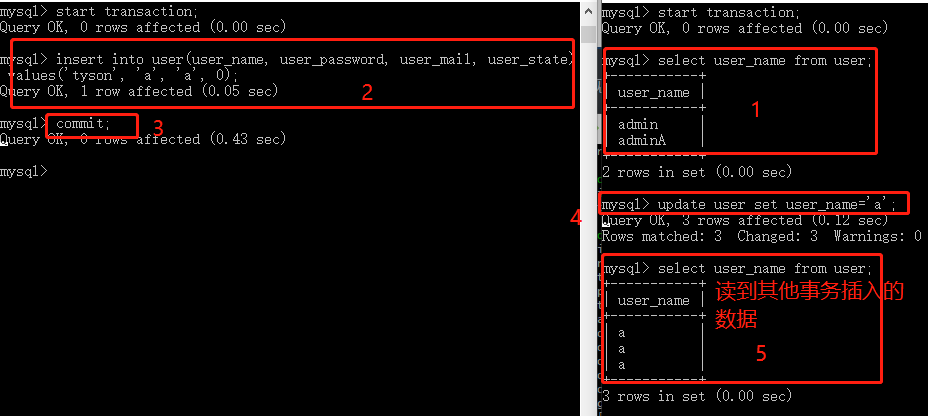
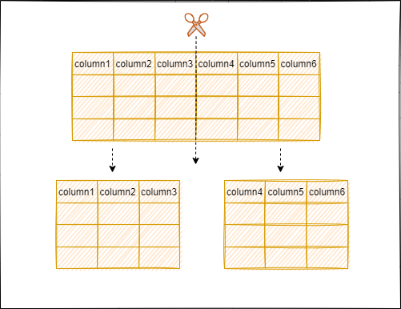
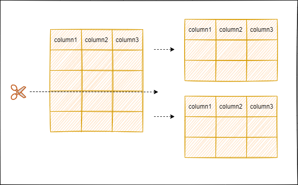

mysql相关
 次阅读
次阅读
文章目录
mysql慢查询怎么优化
- 检查是否走了索引，如果没有，优化 SQL 利用索引
- 检查 利用的索引是否是最优索引，没有的话，尽量用最优索引
- 检查所查字段是否是必须的，是否有多余数据【不要查多余数据】
- 表中数据是否过多，是否分库分表
- 检查数据库实例所在的机器性能配置，是否太低，是否应该适当增加资源
https://www.bilibili.com/video/BV1zL4y1e7YN?p=2&spm_id_from=pageDriver
索引的本质
索引是帮助 MYSQL 获取数据的排好序的数据结果【内部已经是有序了，最左前缀匹配原则 就是 索引分布的顺序】
聚集索引和非聚集索引
聚集索引是 数据放在 索引的叶子节点， 非聚集索引 是 索引和数据分离，索引有指针 指向那个数据
聚簇索引和非聚簇索引最主要的区别是数据和索引是否分开存储。
- 聚簇索引：将数据和索引放到一起存储，索引结构的叶子节点保留了数据行。
- 非聚簇索引：将数据进和索引分开存储，索引叶子节点存储的是指向数据行的地址。
在InnoDB存储引擎中，默认的索引为B+树索引，利用主键创建的索引为主索引，也是聚簇索引，在主索引之上创建的索引为辅助索引，也是非聚簇索引。为什么说辅助索引是在主索引之上创建的呢，因为辅助索引中的叶子节点存储的是主键。
在MyISAM存储引擎中，默认的索引也是B+树索引，但主索引和辅助索引都是非聚簇索引，也就是说索引结构的叶子节点存储的都是一个指向数据行的地址。并且使用辅助索引检索无需访问主键的索引。
可以从非常经典的两张图看看它们的区别(图片来源于网络)：


重点
一个表只能有一个聚集索引 ， 而非聚集索引可以有很多个，
InnoDB 会创建一个因此 的 row-id 作为聚集索引 【主键】
如果表定义了 pk, pk 就是聚集索引，否则用隐藏的 row-id 作为索引
myisam 使用的是非聚集索引，数的叶子节点上 的 data 不是数据本身， 而是数据存放的地址。 InnoDB 使用的是聚集索引，叶子节点上的data就是数据本身。
覆盖索引和回表：
- 如果只需要在一颗索引树上获取 SQL 所需要的所有列，就不需要再回表查询， 这样查询速度就可以更快。
- 实现索引覆盖的最简单简单的方式就是要查询的字段，全部建立到联合索引当中。
- user(PK id, name sex)
- select count (name) from user : -> name 字段简历一个索引
- select id ,name,sex from user -> name 索引升级为 (name,sex )的联合索引。
- 索引页不是越多越好，因为数据更新还要去修改索引，索引越多，更新越慢。
回表和覆盖索引
覆盖索引意思是 ，查询的字段是索引的一部分，并且 sql 查询的时候 是利用的这个索引，那么 可以将数据之间从索引中取出【速度快】， 回表的话就是 有一部分数据是索引中没有存的，那么就要 利用这个索引 去定位到对应的数据表中，
回表重点
重点 必背
- 普通索引和主键索引的区别【 主键聚餐索引，一次查询， 普通索引存的是主键索引， 用普通索引就会有个回表
- 覆盖索引， 如果查询的数据都是索引的数列，并且使用了这个索引，可以直接从索引中读取，就一次查询，就不需要回表操作了。
Innodb 如何实现事务
Innodb 通过 Buffer Pool ,LogBuffer , redo log ，undo log 实现事务，以一个 update语句为例
-
innodb在收到一个 update 语句后，会根据条件找到数据所在的也，并将该也缓存在 buffer pool 中
-
执行 update 语句，修改 buffer pool 也就是内存中的数据
-
针对 update 语句 生成一个 redo log 对象，并存入 logBuffer 中
-
针对update 语句生成 undolog 日志，用于事务回滚
-
如果事务提交，那么则把 redolog 对象进行持久化，后序还有其他机制将 buffer pool 中所修改的数据也持久化到磁盘中
- 后续会有个 purge 线程 将 buffer pool 的脏页持久化到磁盘中。
-
如果事务回滚，则用 undolog 日志进行回滚。
索引的种类
- b+ 树索引
- 哈希索引：
- 原理：把不固定的输入转为固定的输出。
两种索引的区别： b树索引可以模糊查询， 哈希索引只能等值查询。
mysql集群搭建
- 主从节点
- 主节点 将 binlog 推送给 slave 节点，slave io线程 通过生成 中继日志 relay log ， 由一个线程将 relay log 同步数据。
mysql 只从 主节点 发送给从节点，由此保证数据的读写分离。
慢sql优化 会考虑哪些
慢查询一般用于记录执行时间超过某个临界值的SQL语句的日志。
相关参数：
- slow_query_log：是否开启慢日志查询，1表示开启，0表示关闭。
- slow_query_log_file：MySQL数据库慢查询日志存储路径。
- long_query_time：慢查询阈值，当SQL语句查询时间大于阈值，会被记录在日志上。
- log_queries_not_using_indexes：未使用索引的查询会被记录到慢查询日志中。
- log_output：日志存储方式。“FILE”表示将日志存入文件。“TABLE”表示将日志存入数据库。
如何对慢查询进行优化？
- 分析语句的执行计划，查看SQL语句的索引是否命中
- 优化数据库的结构，将字段很多的表分解成多个表，或者考虑建立中间表。
- 优化LIMIT分页。
B+ 树和 B树区别
- B树特点：
- 节点排序
- 一个节点可以存多个元素，多个元素也是排序的。
- 这里注意问：最左前缀匹配原则 怎么理解【被问过2次】
- B+ 树的特点：
- 拥有B树的特点
- 叶子节点之间有指针 【数据主要存放在叶子节点】
- 非叶子节点中的元素是冗余数据， 也就是叶子节点上存储了所有的元素，并且是排好序的
Mysql 索引使用的是 B+ 树， 因为索引是用来加快查询的， 而B+树通过对数据 进行排序所以是可以提高查询速度， 然后通过节点中可以存储多个元素，从而可以使得B+树的高度不会太高， 在 Mysql 中一个 Innodb 页就是 一个 B+树节点， 一个 innodb页面默认 是 16KB, 所以一般情况下 一颗两层的 B+树可以存2000万行左右的数据，然后通过B+ 树叶子节点中存储了所有的数据并且进行了排序，并且叶子节点之间有指针，可以很好的支持全表扫描，范围查找等SQL语句。
一般用explain 解析 sql
然后 根据 type 字段的反馈 来优化 sql
反馈字段：
- type: sql优化的重要手段： 判断sql性能和优化程度的重要指标。
- const： 通过索引一次命中， 匹配一行数据
- System： 表中 只有一行记录，相当于系统表。
- eq_ref : 唯一索引，只有一条记录和它匹配
- ref: 非唯一索引扫码，返回匹配某个值的所有。
- range: 范围索引，使用一个索引来匹配行 ，一般用于 between ，
<,> - index; 只遍历索引树 【遍历了整个索引，范围算是及其低了 O(N) 】
- 注意： 这种和 ALL 相比也是另一种形式的全表扫描，只不过它是根据索引扫描表，然后回表取数据， 和 all 相比，都是取得全表的数据
- 官方说 它比 ALL 快的原因可能是 **按照索引扫描全表的数据是有序的。**这样一来，结果不同，也就没法比效率的问题了。
- ALL : 全表扫描，这个类型查询性能最差
- 一般来说，得保证查询至少达到range级别，最好能达到ref。
Extra
如果是Only index，这意味着信息只用索引树中的信息检索出的，这比扫描整个表要快。
如果是where used，就是使用上了where限制。
如果是impossible where 表示用不着where，一般就是没查出来啥。
如果此信息显示Using filesort或者Using temporary的话会很吃力，WHERE和ORDER BY的索引经常无法兼顾，如果按照WHERE来确定索引，那么在ORDER BY时，就必然会引起Using filesort，这就要看是先过滤再排序划算，还是先排序再过滤划算。
锁
间隙锁【 MVCC RR ， 解决幻读原理】
mysql 的 mvcc RR 解决了幻读，默认开启了间隙锁解决了这个问题
行锁（Record Lock）：锁直接加在索引记录上面。
间隙锁（Gap Lock）：锁加在不存在的空闲空间，可以是两个索引记录之间，也可能是第一个索引记录之前或最后一个索引之后的空间。
Next-Key Lock：行锁与间隙锁组合起来用就叫做Next-Key Lock。
什么是间隙锁？

正常等值条件 并且值存在的情况下加的是行锁
如果等值条件 值不存在的情况下加的是间隙锁，或者范围查询，加的也是间隙锁
举个例子：
根据主键id，不只是有五个行锁，还会有六个间隙锁，左开右闭原则，（-∞，5]（5，10]（10，15]（15，20]（20，25]（25，+supernum]
例如 select * from table where id = 10 for update; 等值条件，id是存在的，加行锁就可以了
select * from table where id = 7 for update; 等值条件，id不存在，加（5，10] 间隙锁，这范围间不允许插入数据，直到这个事务提交完成释放锁
select * from table where id > 24; 范围条件，加间隙锁
通过行锁+间隙锁的机制保证了事务A select之后，其他事务相应的insert操作会阻塞
什么是undolog?
undolog存放不同事务版本下的不同数据，
用于 1.历史恢复 通过undolog恢复之前版本的数据 2. 读老版本 根据条件读旧版本的数据
每次数据变更都会产生undolog记录，undolog记录分为 insert undo_log 和 update undo_log
insert操作属于insert undo_log，只针对当前事务，在insert操作后产生undo_log记录，在事务提交后删除undo_log记录，说白了就是给当前事务自己看的.
update 和 delete操作属于update undo_log，会根据隔离级别不同事务版本的数据可见性不同
什么是readView?
快照 存放了当前活跃的一些事务版本号，以及上一个版本的地址. 用来做可见性判断
readview根据生成时间不同，产生了RC,RR两种可见性
RC：每条select创建一个新的readview ，所以导致读提交 读到的都是最新提交的！
RR：事务开始的时候创建一个readview, 一直到事务结束都用的这个readview，也就避免了不可重复读
当前读与快照读
单条普通的select语句属于快照读
select for update , insert, update, delete 属于当前读
快照读由mvcc+undolog实现
当前读由行锁+间隙锁实现
缓存篇
缓存的常见问题
作者：路人zhang
链接：
https://www.nowcoder.com/discuss/744436?channel=-1&source_id=profile_follow_post_nctrack
来源：牛客网
缓存穿透：指缓存和数据库中都没有的数据，所有请求都打在数据库上，造成数据库短时间承受大量请求而挂掉
解决方法：
- 增加接口校验，过滤一些不合法请求，比如大量订单号为-1的数据
- 从缓存和数据库都不能获取到的数据，可以先对空的结果进行缓存，比如key-null，缓存有效期要设置的短一些
- 采用布隆过滤器，过滤掉一定不存在的数据
缓存击穿：指缓存中没有但数据库中有的数据，一般是在高并发的情况下，某些热门key突然过期，导致所有请求直接打到数据库上
解决方法：：
- 设置热点数据永不过期
- 加互斥锁
缓存雪崩：大量缓存在一段时间内集中过期，导致查询的数据都打在数据库上，和缓存击穿的区别是缓存过期的数量
解决方法：
- 将缓存的过期时间设置随机，避免大量缓存同时过期
- 服务降级或熔断
其他笔记
[[post/02.数据库/01.MySQL/4.事务和锁|事务和锁]]
Mysql 深分页优化
processlist 用过吗？
show processlist 或者 show full processlist 可以查看当前 MySQL 是否有压力，正在运行的SQL，有没有慢SQL正在执行。返回参数如下：
id：线程ID，可以用kill id杀死某个线程
db：数据库名称
user：数据库用户
host：数据库实例的IP
command：当前执行的命令，比如Sleep，Query，Connect 等
time：消耗时间，单位秒
state：执行状态，主要有以下状态：
Sleep，线程正在等待客户端发送新的请求
Locked，线程正在等待锁
Sending data，正在处理SELECT查询的记录，同时把结果发送给客户端
Kill，正在执行kill语句，杀死指定线程
Connect，一个从节点连上了主节点
Quit，线程正在退出
Sorting for group，正在为GROUP BY做排序
Sorting for order，正在为ORDER BY做排序
info：正在执行的SQL语句
查询原理
问题： MySQL查询 limit 1000,10 和limit 10 速度一样快吗？
而其实 limit size ，相当于 limit 0, size。也就是从0开始取size条数据。
也就是说，两种方式的区别在于offset是否为0。
先来看下limit sql的内部执行逻辑。
MySQL内部分为server层和存储引擎层。一般情况下存储引擎都用innodb。
server层有很多模块，其中需要关注的是执行器是用于跟存储引擎打交道的组件。
执行器可以通过调用存储引擎提供的接口，将一行行数据取出，当这些数据完全符合要求（比如满足其他where条件），则会放到结果集中，最后返回给调用mysql的客户端。
select * from xxx order by id limit 0, 10
server层会调用innodb的接口，在innodb里的主键索引中获取到第0到10条完整行数据，依次返回给server层，并放到server层的结果集中，返回给客户端。
把offset搞大点，比如执行的是 select * from xxx order by id limit 500000, 10
server层会调用innodb的接口，由于这次的offset=500000，会在innodb里的主键索引中获取到第0到（500000 + 10）条完整行数据，返回给server层之后根据offset的值挨个抛弃，最后只留下最后面的size条，也就是10条数据，放到server层的结果集中，返回给客户端。
可以看出，当offset非0时，server层会从引擎层获取到很多无用的数据，而获取的这些无用数据都是要耗时的。
Mysql 架构
MySQL主要分为 Server 层和存储引擎层：
- Server 层：主要包括连接器、查询缓存、分析器、优化器、执行器等，所有跨存储引擎的功能都在这一层实现，比如存储过程、触发器、视图，函数等，还有一个通用的日志模块 binglog 日志模块。
- 存储引擎： 主要负责数据的存储和读取。server 层通过api与存储引擎进行通信。
Server 层基本组件
- 连接器： 当客户端连接 MySQL 时，server层会对其进行身份认证和权限校验。
- 查询缓存: 执行查询语句的时候，会先查询缓存，先校验这个 sql 是否执行过，如果有缓存这个 sql，就会直接返回给客户端，如果没有命中，就会执行后续的操作。
- 分析器: 没有命中缓存的话，SQL 语句就会经过分析器，主要分为两步，词法分析和语法分析，先看 SQL 语句要做什么，再检查 SQL 语句语法是否正确。
- 优化器： 优化器对查询进行优化，包括重写查询、决定表的读写顺序以及选择合适的索引等，生成执行计划。
- 执行器： 首先执行前会校验该用户有没有权限，如果没有权限，就会返回错误信息，如果有权限，就会根据执行计划去调用引擎的接口，返回结果。
子查询优化
|
|
当offset非常大时，server层会从引擎层获取到很多无用的数据，而当select后面是*号时，就需要拷贝完整的行信息，拷贝完整数据相比只拷贝行数据里的其中一两个列字段更耗费时间。
因为前面的offset条数据最后都是不要的，没有必要拷贝完整字段，所以可以将sql语句修改成：
|
|
先执行子查询 select id from xxx by id limit 500000, 1, 这个操作，其实也是将在innodb中的主键索引中获取到500000+1条数据，然后server层会抛弃前500000条，只保留最后一条数据的id。
但不同的地方在于，在返回server层的过程中，只会拷贝数据行内的id这一列，而不会拷贝数据行的所有列，当数据量较大时，这部分的耗时还是比较明显的。
假设在拿到了上面的id之后，这个id正好等于500000，那sql就变成了
|
|
如果没有 id>= ? , 这样就是全表扫描，时间是 o(N),
通过子查询，这样innodb再走一次主键索引，通过B+树快速定位到id=500000的行数据，时间复杂度是lg(n)，然后向后取10条数据,
通过主键索引，每次定位到start_id的位置，然后往后遍历10个数据，这样不管数据多大，查询性能都较为稳定。
大表查询慢怎么优化？
某个表有近千万数据，查询比较慢，如何优化？
当MySQL单表记录数过大时，数据库的性能会明显下降，一些常见的优化措施如下：
- 合理建立索引。在合适的字段上建立索引，例如在WHERE和ORDER BY命令上涉及的列建立索引，可根据EXPLAIN来查看是否用了索引还是全表扫描
- 索引优化，SQL优化。最左匹配原则等，
- 建立分区。对关键字段建立水平分区，比如时间字段，若查询条件往往通过时间范围来进行查询，能提升不少性能
- 利用缓存。利用Redis等缓存热点数据，提高查询效率
- 限定数据的范围。比如：用户在查询历史信息的时候，可以控制在一个月的时间范围内
- 读写分离。经典的数据库拆分方案，主库负责写，从库负责读
- 通过分库分表的方式进行优化，主要有垂直拆分和水平拆分
- 数据异构到es
- 冷热数据分离。几个月之前不常用的数据放到冷库中，最新的数据比较新的数据放到热库中
- 升级数据库类型，换一种能兼容MySQL的数据库（OceanBase、tidb）
说说count(1)、count(*)和count(字段名)的区别
两者的主要区别是
count(1) 会统计表中的所有的记录数，包含字段为null 的记录。
count(字段名) 会统计该字段在表中出现的次数，忽略字段为null 的情况。即不统计字段为null 的记录。
执行效率上：
列名为主键，count(字段名)会比count(1)快
列名不为主键，count(1)会比count(列名)快
如果表多个列并且没有主键，则 count(1) 的执行效率优于 count()
如果有主键，则 select count(主键)的执行效率是最优的
如果表只有一个字段，则 select count()最优。
redo log
自增主键保存在什么地方？
不同的引擎对于自增值的保存策略不同：
MyISAM引擎的自增值保存在数据文件中。
在MySQL8.0以前，InnoDB引擎的自增值是存在内存中。MySQL重启之后内存中的这个值就丢失了，每次重启后第一次打开表的时候，会找自增值的最大值max(id)，然后将最大值加1作为这个表的自增值；MySQL8.0版本会将自增值的变更记录在redo log中，重启时依靠redo log恢复。
MySQL日志主要包括查询日志、慢查询日志、事务日志、错误日志、二进制日志等。其中比较重要的是 bin log（二进制日志）和 redo log（重做日志）和 undo log（回滚日志）。
bin log
bin log是MySQL数据库级别的文件，记录对MySQL数据库执行修改的所有操作，不会记录select和show语句，主要用于恢复数据库和同步数据库。
redo log
redo log是innodb引擎级别，用来记录innodb存储引擎的事务日志，不管事务是否提交都会记录下来，用于数据恢复。当数据库发生故障，innoDB存储引擎会使用redo log恢复到发生故障前的时刻，以此来保证数据的完整性。将参数innodb_flush_log_at_tx_commit设置为1，那么在执行commit时会将redo log同步写到磁盘。
undo log
除了记录redo log外，当进行数据修改时还会记录undo log，undo log用于数据的撤回操作，它保留了记录修改前的内容。通过undo log可以实现事务回滚，并且可以根据undo log回溯到某个特定的版本的数据，实现MVCC。
为什么要做主从同步？
读写分离，使数据库能支撑更大的并发。
在主服务器上生成实时数据，而在从服务器上分析这些数据，从而提高主服务器的性能。
数据备份，保证数据的安全。
语法
having和where区别？
二者作用的对象不同，where子句作用于表和视图，having作用于组。
where在数据分组前进行过滤，having在数据分组后进行过滤。
生产环境数据库用 什么级别？
生产环境大多使用RC。为什么不是RR呢？
缘由一：在RR隔离级别下，存在间隙锁，导致出现死锁的几率比RC大的多！ 缘由二：在RR隔离级别下，条件列未命中索引会锁表！而在RC隔离级别下，只锁行!
也就是说，RC的并发性高于RR。
并且大部分场景下，不可重复读问题是可以接受的。毕竟数据都已经提交了，读出来本身就没有太大问题！
举个例子 为什么RR会死锁
假设有两个事务T1和T2，它们都试图修改数据表中的同一行数据。在RR隔离级别下，当T1事务开始执行时，它会对那行数据加锁以防止其他事务对其进行修改。接着，T2事务也开始执行，并试图修改同一行数据。由于RR隔离级别下使用的是间隙锁，T2事务也会对该行数据加锁。此时，T1和T2事务都在等待对方释放锁，从而导致死锁。
为了避免死锁，可以采取一些措施，例如使用锁超时、按照一定的顺序访问数据、避免长时间持有锁等。同时，合理设计数据库和查询语句也是减少死锁的重要手段。
什么时候必须用RR
不可重复读问题是可以接受的。毕竟数据都已经提交了，读出来本身就没有太大问题！
但是假设 我要分页更新1w 条数据， 如果更新的时候 数据库有假如新的数据，这个页数会变化，可能导致一些问题，
这个时候就要 用 RR
比如有100页， 我在更新到第2页的时候，往 第一页插入了一条新数据， 这个时候 页数就会往后挪动，我会重复查到上次我更新的数据，以及这个新加的数据，会有幻读的情况
Mysql RR 能够解决幻读
在RR隔离级别下，对于普通的无锁查询（快照读），同一个事务中只会读一次，因此在事务过程中，其他事务的变更不会影响到当前事务的查询结果。这种快照读可以解决脏读、不可重复读以及幻读问题。
对于当前读，RR隔离级别通过锁（记录锁、间隙锁等）来解决脏读、不可重复读以及幻读问题。读取的行以及行的间隙都会被加锁，直到事务提交时才会释放，其他的事务无法进行修改，所以也不会出现不可重复读、幻读的情形。其中，间隙锁在RR隔离级别中才生效，可以防止其他事务在已锁定的记录范围之外插入数据，从而避免幻读的发生。
RR 什么sql会有当前读，举个例子
当前读（Current Read）通常用于需要获取最新数据状态的查询。当前读会获取最新的数据版本，而不是使用事务开始时的数据快照。
|
|
表记录有两种读取方式。
-
快照读：读取的是快照版本。普通的SELECT就是快照读。通过mvcc来进行并发控制的，不用加锁。
-
当前读：读取的是最新版本。UPDATE、DELETE、INSERT、SELECT … LOCK IN SHARE MODE、SELECT … FOR UPDATE是当前读。
Mysql 有哪些锁
按锁粒度分类，有行级锁、表级锁和页级锁。
- 行级锁是mysql中锁定粒度最细的一种锁。表示只针对当前操作的行进行加锁。行级锁能大大减少数据库操作的冲突，其加锁粒度最小，但加锁的开销也最大。行级锁的类型主要有三类：
- Record Lock，记录锁，也就是仅仅把一条记录锁上；
- Gap Lock，间隙锁，锁定一个范围，但是不包含记录本身；
- Next-Key Lock：Record Lock + Gap Lock 的组合，锁定一个范围，并且锁定记录本身。
- 表级锁是mysql中锁定粒度最大的一种锁，表示对当前操作的整张表加锁，它实现简单，资源消耗较少，被大部分mysql引擎支持。最常使用的MyISAM与InnoDB都支持表级锁定。
- 页级锁是 MySQL 中锁定粒度介于行级锁和表级锁中间的一种锁。表级锁速度快，但冲突多，行级冲突少，但速度慢。因此，采取了折衷的页级锁，一次锁定相邻的一组记录。
按锁级别分类，有共享锁、排他锁和意向锁。
共享锁又称读锁，是读取操作创建的锁。其他用户可以并发读取数据，但任何事务都不能对数据进行修改（获取数据上的排他锁），直到已释放所有共享锁。
排他锁又称写锁、独占锁，如果事务T对数据A加上排他锁后，则其他事务不能再对A加任何类型的封锁。获准排他锁的事务既能读数据，又能修改数据。
意向锁是表级锁，其设计目的主要是为了在一个事务中揭示下一行将要被请求锁的类型。InnoDB 中的两个表锁：
意向共享锁（IS）：表示事务准备给数据行加入共享锁，也就是说一个数据行加共享锁前必须先取得该表的IS锁；
意向排他锁（IX）：类似上面，表示事务准备给数据行加入排他锁，说明事务在一个数据行加排他锁前必须先取得该表的IX锁。
意向锁是 InnoDB 自动加的，不需要用户干预。
对于INSERT、UPDATE和DELETE，InnoDB 会自动给涉及的数据加排他锁；对于一般的SELECT语句，InnoDB 不会加任何锁，事务可以通过以下语句显式加共享锁或排他锁。
MVCC 实现原理
MyISAM不支持，InnoDB支持。应对高并发事务，MVCC比单纯的加锁更高效。
MVCC(Multiversion concurrency control) 就是同一份数据保留多版本的一种方式，进而实现并发控制。在查询的时候，通过read view和版本链找到对应版本的数据。
作用：提升并发性能。对于高并发场景，MVCC比行级锁开销更小。
MVCC 实现原理如下：
MVCC 的实现依赖于版本链，版本链是通过表的三个隐藏字段实现。
DB_TRX_ID：当前事务id，通过事务id的大小判断事务的时间顺序。
DB_ROLL_PTR：回滚指针，指向当前行记录的上一个版本，通过这个指针将数据的多个版本连接在一起构成undo log版本链。
DB_ROW_ID：主键，如果数据表没有主键，InnoDB会自动生成主键。
InnoDB通过mvcc机制避免了幻读现象。而mvcc机制无法避免当前读情况下出现的幻读现象。因为当前读每次读取的都是最新数据，这时如果两次查询中间有其它事务插入数据，就会产生幻读。

以上就是当前读出现的幻读现象。
上面说的这个，就是 幻读的问题了， 要想解决，就必须用快照读，而不是当前读
分库分表
垂直划分数据库是根据业务进行划分，例如购物场景，可以将库中涉及商品、订单、用户的表分别划分出成一个库，通过降低单库的大小来提高性能。同样的，分表的情况就是将一个大表根据业务功能拆分成一个个子表，例如商品基本信息和商品描述，商品基本信息一般会展示在商品列表，商品描述在商品详情页，可以将商品基本信息和商品描述拆分成两张表

优点：行记录变小，数据页可以存放更多记录，在查询时减少I/O次数。
缺点：
主键出现冗余，需要管理冗余列；
会引起表连接JOIN操作，可以通过在业务服务器上进行join来减少数据库压力；
依然存在单表数据量过大的问题。
水平划分
水平划分是根据一定规则，例如时间或id序列值等进行数据的拆分。比如根据年份来拆分不同的数据库。每个数据库结构一致，但是数据得以拆分，从而提升性能。

优点：单库（表）的数据量得以减少，提高性能；切分出的表结构相同，程序改动较少。
缺点：
分片事务一致性难以解决
跨节点join性能差，逻辑复杂
数据分片在扩容时需要迁移
什么是分区表？
分区是把一张表的数据分成N多个区块。分区表是一个独立的逻辑表，但是底层由多个物理子表组成。
当查询条件的数据分布在某一个分区的时候，查询引擎只会去某一个分区查询，而不是遍历整个表。在管理层面，如果需要删除某一个分区的数据，只需要删除对应的分区即可。
分区一般都是放在单机里的，用的比较多的是时间范围分区，方便归档。只不过分库分表需要代码实现，分区则是mysql内部实现。分库分表和分区并不冲突，可以结合使用。
分区表类型
| 类型 | 用法 | |
|---|---|---|
| range分区 | 比如按照时间范围分区 | |
| list分区 | 对于list分区，分区字段必须是已知的，如果插入的字段不在分区时的枚举值中，将无法插入。 | |
| hash分区 | 可以将数据均匀地分布到预先定义的分区中。 |
- Range分区例子
|
|
在/var/lib/mysql/data/可以找到对应的数据文件，每个分区表都有一个使用#分隔命名的表文件：
|
|
list分区
list分区和range分区相似，主要区别在于list是枚举值列表的集合，range是连续的区间值的集合。对于list分区，分区字段必须是已知的，如果插入的字段不在分区时的枚举值中，将无法插入。
|
|
hash分区
可以将数据均匀地分布到预先定义的分区中。
|
|
分区的问题？
打开和锁住所有底层表的成本可能很高。当查询访问分区表时，MySQL 需要打开并锁住所有的底层表，这个操作在分区过滤之前发生，所以无法通过分区过滤来降低此开销，会影响到查询速度。可以通过批量操作来降低此类开销，比如批量插入、LOAD DATA INFILE和一次删除多行数据。
维护分区的成本可能很高。例如重组分区，会先创建一个临时分区，然后将数据复制到其中，最后再删除原分区。
所有分区必须使用相同的存储引擎。
MySQL数据如何同步到Redis缓存？
有两种方案：
1、通过MySQL自动同步刷新Redis，MySQL触发器+UDF函数实现。
过程大致如下：
在MySQL中对要操作的数据设置触发器Trigger，监听操作
客户端向MySQL中写入数据时，触发器会被触发，触发之后调用MySQL的UDF函数
UDF函数可以把数据写入到Redis中，从而达到同步的效果
2、解析MySQL的binlog，实现将数据库中的数据同步到Redis。可以通过canal实现。canal是阿里巴巴旗下的一款开源项目，基于数据库增量日志解析，提供增量数据订阅&消费。
canal的原理如下：
canal模拟mysql slave的交互协议，伪装自己为mysql slave，向mysql master发送dump协议
mysql master收到dump请求，开始推送binary log给canal
canal解析binary log对象（原始为byte流），将数据同步写入Redis。
为什么阿里Java手册禁止使用存储过程？
先看看什么是存储过程。
存储过程是在大型数据库系统中，一组为了完成特定功能的SQL 语句集，它存储在数据库中，一次编译后永久有效，用户通过指定存储过程的名字并给出参数（如果该存储过程带有参数）来执行它。
存储过程主要有以下几个缺点。
存储过程难以调试。存储过程的开发一直缺少有效的 IDE 环境。SQL 本身经常很长，调试式要把句子拆开分别独立执行，非常麻烦。
移植性差。存储过程的移植困难，一般业务系统总会不可避免地用到数据库独有的特性和语法，更换数据库时这部分代码就需要重写，成本较高。
管理困难。存储过程的目录是扁平的，而不是文件系统那样的树形结构，脚本少的时候还好办，一旦多起来，目录就会陷入混乱。
存储过程是只优化一次，有的时候随着数据量的增加或者数据结构的变化，原来存储过程选择的执行计划也许并不是最优的了，所以这个时候需要手动干预或者重新编译了。
其他
[[..\mysql\mysql 索引.md]]
[[..\mysql\mysql开发注意事项.md]]
[[..\mysql\mysql查询去重总结.md]]
[[....\14.新语言学习记录\linux\linux基础原理杂记\mysql\crud_commands.md]]
[[....\14.新语言学习记录\linux\linux基础原理杂记\mysql\mysql数据库管理.md]]
[[....\14.新语言学习记录\中间件工具\clickHouse\其他\mysql同步 clickhouse解决方案.md]]
文章作者 LYR
上次更新 2021-08-17